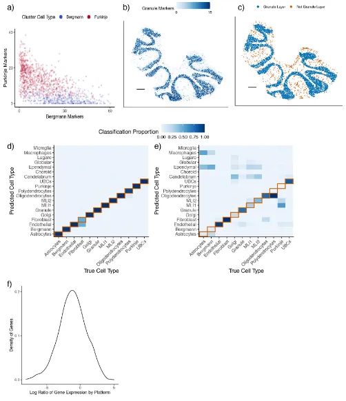
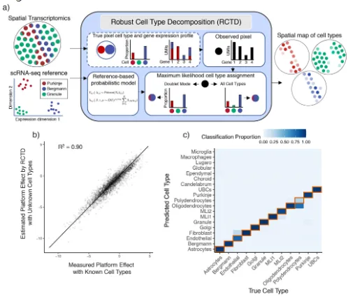
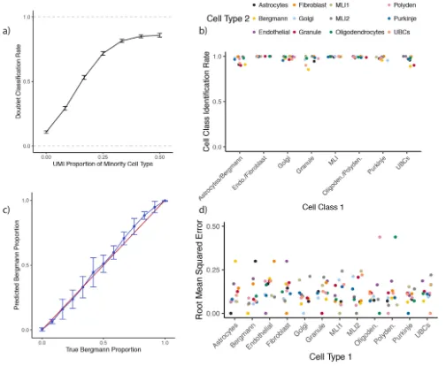
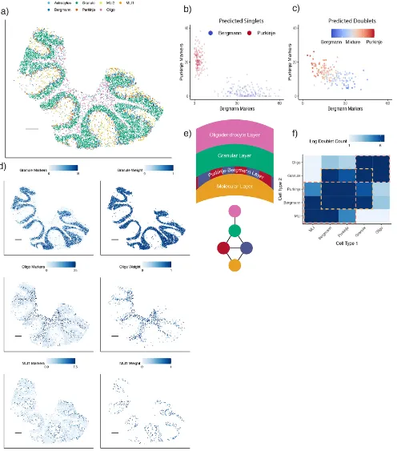
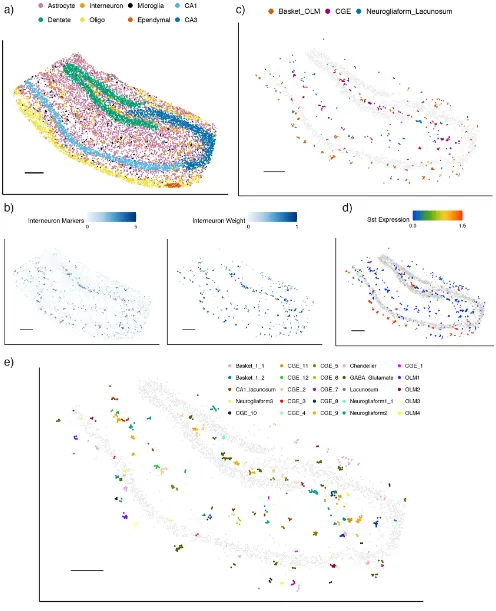
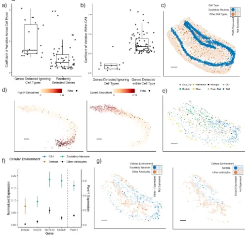

《Nature Biotechnology》：稳定的空转细胞解卷积方法—RCTD
原文：https://mp.weixin.qq.com/s?__biz=MzAwMzIzOTk5OQ==&mid=2247528615&idx=1&sn=da28e5732137cadd9fddfec83ab38cc3&chksm=9b3c09f7ac4b80e13294be6f638616dfb0a03796c08143c1e476dafdf67d65035eb680597397#rd 合集：空间转录组 / 文献速递
一、写在前面
这是一篇2022年发表在《Nature Biotechnology 》的文章，彼时阻碍空转识别具有空间模式的细胞类型与表达量的最大障碍仍然是分辨率 的问题：在sequencing-base的空转中通常是一个spot包含多个细胞。这为空间转录组数据的价值上了一个非常狠的debuff，因为大部分情况下细胞类型之间的差异要远大于组间差异，这会影响很多生物学问题的研究。即使是Slide-seq这种分辨率与真实细胞大小极为接近的技术(~10μm)，也会遇到实际细胞和芯片的spot不能一一重合的问题。因此本文作者开发了"Robust Cell Type Decomposition"(RCTD)算法来借助单细胞测序数据对空转细胞进行去卷积，从而生成细胞类型的基因表达图谱。值得一提的是，不同于前面我们介绍的两个工具，RCTD是一个R包，这就意味着其可以流畅的衔接Seurat的单细胞和空转对象(教程可参考：scRNA-Seq学习手册2023_R语言版和Seurat空间转录组学习手册)。其可以通过监督式学习的方法对"RNA细胞混合"数据进行解卷积，为每个空间位点上的数据进行细胞类型划分。在这个过程中，批次、技术差异引入的变量也同样值得被考虑，作者测试了Slide-seq、Visium等模拟及实际数据集，通过标准化解决了这些批次效应并能够捕获到转录组微小的变化(识别细胞亚群)。RCTD的教程可见：一文搞定空间转录组与单细胞测序的整合分析
更多空转分析教程可见：空间转录组学习手册合辑 一文搞定空间转录组与单细胞测序的整合分析CellChat空转细胞通讯合辑
二、主要内容
(1)空转数据的挑战：细胞混合、平台效应
spot不能代表单细胞的最大问题就是很多时候一个spot上会表达多个细胞的marker，例如在小脑的slide-seq数据当中Bergmann 和Purkinje 的特征就在一定程度上被混淆 了(Fig.1a)，在普通的聚类分群中并不能将包含这两种细胞类型的spot给区分开。这一现象的原理很简单，即一个spot 中包含多个细胞，而很多出现在一个layer中的细胞都会发生这种现象(Fig.1b-c)。
很多情况下，训练数据(Fig.1d)的准确率要远大于测试数据(Fig.1e)，这之前的差别可能由平台之间的差别引起，例如不同基因在single-cell和single-nuclear数据集间的表达比值存在差异，差异倍数甚至能超过25 (Fig.1f)。NMFreg作为一个监督式的细胞类型划分算法便不能排除这些平台因素带来的影响，对于DWLS这种常被用于Bulk RNA-seq去卷积的技术而言，也同样面临这一问题。
Figure1

(2)RCTD能够跨平台解卷积识别细胞类型¶
为了解决上述的挑战，RCTD首先计算scRNA-seq参考数据中每种细胞类型的平均基因表达量(Fig.2a);接着，RCTD利用单个细胞的线性拟合来构建空间细胞类型图谱，这个过程中RCTD默认各个基因的count遵循泊松分布并区分singlet 与doublets(scRNA-Seq双细胞过滤手册)。在计算结果中可以发现RCTD在对跨平台数据进行标准化后预测结果能达到R2=1.9(Fig.2b)且准确率能够达到89.5%。
Figure2

考虑到空转数据没有真正的Ground thruth，作者进一步使用分别来源于singlet和doublets的单细胞数据集验证RCTD的准确性(Fig.3a)， 最终发现在singlet的数据集中的准确率(89.1)要高于doublets(81.1)。而在doublets的细胞类型判定上，RCTD的准确率高达98.2%(Fig.3b)，在细胞比例的计算中均方根误差仅12.8%(Fig.3c-d)。这算是以有"测试数据集"ground truth的情况下验证了RCTD对于singlet、doublets中细胞类型及比例识别的能力进行了评估。在进一步的评估中，作者发现RCTD在每个spot包含UMI 数量大于100时计算结果较为准确，并能够识别3~4种细胞类型混合的spot，而当参考数据集中没有相似的细胞类型时，准确率会下降。
Figure3

(3)RCTD能够定位空转数据中的细胞类型
在细胞类型的定位(实际上就是对应位置每种细胞类型的权重)中(Fig.4a)，可以明显发现不同的细胞类型明显分为不同的layer，在singlet中Bergmann与Purkinje的marger基因表达有明显的分群(Fig.4b)，而在doublets的细胞划分结果中也可以看出Bergmann与Purkinje的marger基因具有显著的差别(Fig.4c)。此外，granular的maker和其localization也十分的一致。有瑕疵的是，在granular layer和molecular layer之间的Bergmann与Purkinje存在大量的混合情况(Fig.4e)，即双细胞以及layer 的边界不利于RCTD对细胞进行定位，而这些部位的双细胞数量也远大于被良好分层的区域(Fig.4f)，不知谁是因 ，谁是果 。注意，这部分结果并没有Ground truth做对照，因此结果的真实性其实还有考究的余地。

(4)RCTD能够定位空转数据中的细胞亚型¶
即使是在单细胞数据中，对细胞亚型的鉴定也十分考验工具对数据的敏感度，这里作者在在此前已完成第一轮注释的小鼠hippocampus的slide-seq与Visium数据中定位出hippocampal细胞(Fig.5a)。在这部分区域中作者进行了interneurons的识别，发现定位的区域、marker的表达以及组织学的结果较为一致(Fig.5b)并进一步将这部分细胞分为Basket_OLM、CGE、Neurogliaform_Lacunosum(Fig.5c)。其中的Sst基因表达量与Basket_OLM的定位相一致(Fig.5d)。按照这个操作，作者最终获得了二十多种细胞类型(Fig.5e)，可初步认为RCTD对细胞亚群的鉴定也具有较高的敏感度 。
Figure5

(5)RCTD能识别细胞类型内的空间可变基因
由于各细胞类型在组织中的分布并不均等，因此空间可变基因与细胞的marker必然会存在一定的交集，那么在分辨率不足的空转技术中空间可变基因与细胞的marker基因之间的鉴定就会相互影响，例如空间自相关性 最高的20个基因仅在很少的细胞类型中表达(Fig.6a)，而细胞类型特异性的基因的空间变异程度也高于忽略细胞类型随机选取的基因(Fig.6b)。这种情况下，空间特异性基因是否是由于细胞类型的分布造成便存疑。例如Ptk2b明显能在海马体的兴奋性神经元中表达，但是计算中其并不是空间高变基因。因此，RCTD提供了方法计算每种细胞内部基因的表达空间模式：首先依据RCTD此前获得的每个spot中的细胞类型的基因表达数据，接着利用这一数据计算空间可变性(permutation F -test，Fig.6b)，再通过局部加权回归来使基因表达量平滑化(Fig.6d)。在这个模块中，RCTD还能通过对各种细胞类型的marger geme进行共定位(Fig.6f-g)来计算出doublets的细胞类型身份(Fig.6e)。例如 Entpd2 富集于星形胶质细胞并与齿状神经元发生共定位(Fig.6f,p =0.25, tow-tail z-test)，这与此前的报道相一致。
Figure6

总结
RCTD与前面介绍的两个工具一样(tangram与cell2location)，最核心的功能就是完成sc/sn数据与空转数据的mapping，从而完成空转数据的解卷积 、注释 等操作。RCTD还致力于细胞和基因的共定位计算 。此外，作者也在致力于完成sc/sn多组学与空转数据的整合，实际上sc/snRNA数据目前在RCTD中被转换为类似于Bulk尺度下的数据，这也意味着RCTD不仅能够完成空转数据的去卷积，也可以扩展至其他领域。在后面的教程中我们也会带大家一起在R中完成RCTD的实操。
RCTD的缺点也与前两个工具相类似，其对空间转录组数据的处理高度依赖于参考数据集，这样参考数据集中不包含的细胞类型就不能在空转数据中正确的注释。
参考：Cable DM, Murray E, Zou LS, Goeva A, Macosko EZ, Chen F, Irizarry RA. Robust decomposition of cell type mixtures in spatial transcriptomics. Nat Biotechnol. 2022 Apr;40(4):517-526.

如何联系我们

 留一个领取资料、免费两周学习版服务器的微信号[Biomamba_zhushou]，方便各位随时交流。同时我们也构建了交流群矩阵，欢迎大家入群讨论。
留一个领取资料、免费两周学习版服务器的微信号[Biomamba_zhushou]，方便各位随时交流。同时我们也构建了交流群矩阵，欢迎大家入群讨论。
大家可以阅读完这几篇之后添加给生信入门初学者的小贴士 如何搜索公众号过往发布内容
已有生信基地联系方式的同学无需重复添加

 您点的每个赞和在看，我都认真当成了喜欢
您点的每个赞和在看，我都认真当成了喜欢